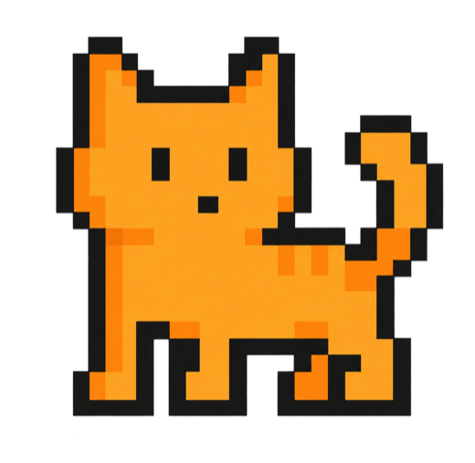

About
Curious about both the system and the person using it.
I am Stella, also known as Yuxuan, a UC Irvine computer science student interested in backend engineering, applied AI, and products that make difficult workflows easier to understand.
What drives my work
Technical depth should create everyday usefulness

My favorite projects begin with a confusing workflow, an unreliable system, or a decision that is difficult to evaluate. I enjoy tracing the path from raw data to the final interaction, then strengthening the parts that users never see but always depend on.
Studying computer science has taught me to move between implementation details and the larger product question. I care about whether a system works, but also whether another person can understand, test, and improve it.
What I am looking for
I am seeking software engineering and applied AI opportunities where I can contribute to production systems, learn from rigorous teammates, and keep improving how intelligent products are evaluated.